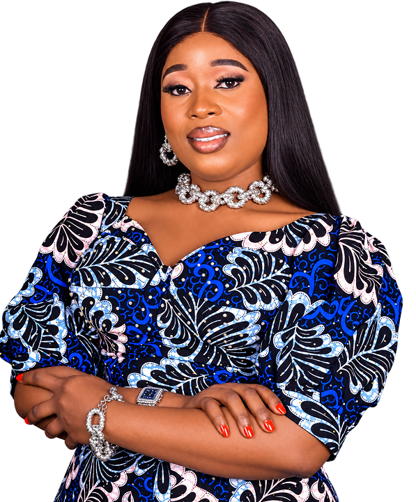
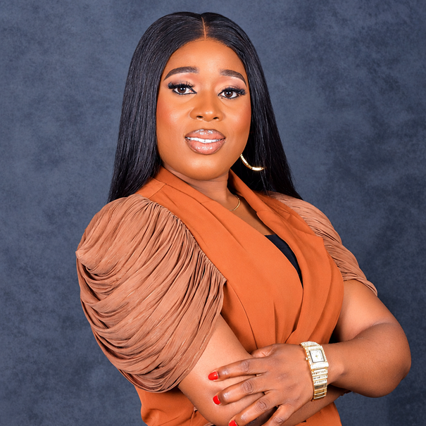

Egor Constituency 2027
Welcome to the official campaign information website of Hon. Jennifer Osarumwense Iyamu.


Hon. Jennifer Osarumwense Iyamu is an Edo State-based community-focused political aspirant and APC candidate for the Edo State House of Assembly, Egor Constituency, for the 2027 election.
Her public activities have included engagement with women, young people, community members, professional groups, political stakeholders and residents across Egor.
Jennifer's campaign places emphasis on listening to community concerns, understanding local priorities and maintaining meaningful engagement with the people she seeks to represent.
Jennifer believes effective representation begins with listening.
Her approach to public service is centred on:
Jennifer's candidacy is built around the importance of having a representative who remains connected to the communities of Egor, listens to residents and brings their concerns into legislative and public discussions.
Her campaign provides this website as a central platform for sharing information about her activities, priorities and engagements.
The people of Egor Constituency deserve effective, accountable, and proactive legislative representation. As we look toward 2027, our constituency stands at a pivotal crossroads requiring dynamic leadership that translates promises into measurable development. My vision is rooted in a clear, action-oriented 6-point legislative agenda designed to elevate every household, empower our youth, and spur grassroots growth across Egor.
Effective legislative leadership starts with open communication and radical transparency. I am committed to bridging the gap between government and the grassroots by establishing regular town hall meetings across all wards in Egor. Every voice will be heard, every concern documented, and every legislative action accounted for.
The core duty of a lawmaker is to draft and sponsor legislation that directly improves lives. My focus at the Edo State House of Assembly will be sponsoring high-impact bills targeting local economic growth, infrastructure expansion, public safety, and consumer protection to ensure Egor receives its fair share of state budgetary allocations.
Our young people are our greatest resource. I will establish targeted vocational training schemes, digital skill acquisition hubs, and enterprise support funds to equip Egor’s youth with marketable skills. By fostering self-reliance, startup grants, and mentorship programs, we will turn potential into sustainable livelihoods.
A solid educational foundation is essential for sustainable progress. I will advocate strongly for increased investment in public primary and secondary schools across Egor, focusing on modern learning infrastructure, teacher training, and science and technology resources. Additionally, functional literacy and technical centers will be supported to ensure lifelong learning for all residents.
Grassroots infrastructure directly impacts quality of life. My legislative agenda will actively champion neighborhood drainage projects, primary road maintenance, improved public sanitation, and local market upgrades. By collaborating with relevant state ministries and community development associations, we will systematically resolve Egor’s persistent infrastructural bottlenecks.
Access to affordable, quality healthcare is a fundamental right. I will advocate for expanded primary health care services across our wards, medical outreach initiatives for women, children, and the elderly, and public health awareness campaigns. Furthermore, social safety interventions will be pushed to support vulnerable groups and low-income families within our communities. Together, we can build an Egor Constituency that works for everyone. I invite you to join me on this journey toward responsive governance, sustainable development, and inclusive prosperity.
Egor Constituency 2027
{kind=link}
{kind=link}
{kind=link}
{kind=link}
{kind=link}
{kind=link}
{kind=link}
{kind=link}